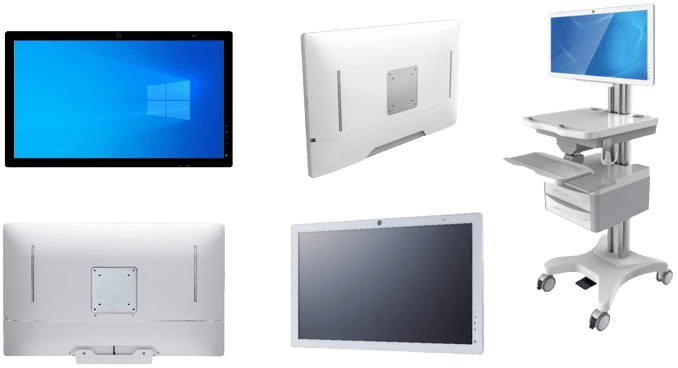

The Continuing Growth of Medical Panel PC Market is Expected in 2022!
05/26/2022 / NEWS
4.6% CAGR | Medical Panel PC
The “Medical Panel PC Market” size is expected to grow from 292.1 million USD In 2020, to reach 401.6 Million USD by 2026, accordingly to “360researchreports” released in March, 2022.
Medical Panel PC is a specific computer consisted of a touch screen and essential medical grade I/O interfaces. It can be installed on a computer cart, mounted on an arm in an operating room to help improve the quality of care and hospital efficiency.
North America is the largest usage area whose market share is close to 35% in 2016. Then Europe is the second largest consumption area with market share of 33%.
The Medical Panel PC market is divided into below 15″, 15-17″, 17-21″, 21-24″ and others. Following with the price of 24″ LCD display becomes much competitive, it could be the major size of Medical panel PC in the near future.
HIMSS show
HIMSS show (The HIMSS Global Health Conference & Exhibition) is one of most important health events, where professionals throughout the global health ecosystem to attend this influential conference and trade to get the information and solutions they need to improve human health and wellness. It was hold in sunny Orlando, USA in March and we were honor to show our latest Medical Grade Panel PC “OmniMPC-241” at our US partner booth and earned quite good responses from many visitors.
OmniMPC-241 | Medical Panel PC
OmniMPC-241
The Valuable Features of OmniMPC-241 for those visitors include
✅Latest 11th Generation Intel Tiger Lake Processor
✅Full HD Display w/ P-Capacitive Touchscreen
✅Fanless, Slim, & Lightweight
✅Optional Backup Battery Pack
✅Telemedicine Capability w/ Microphones, Speaker & Camera
✅Guaranteed Long Life Cycle Support